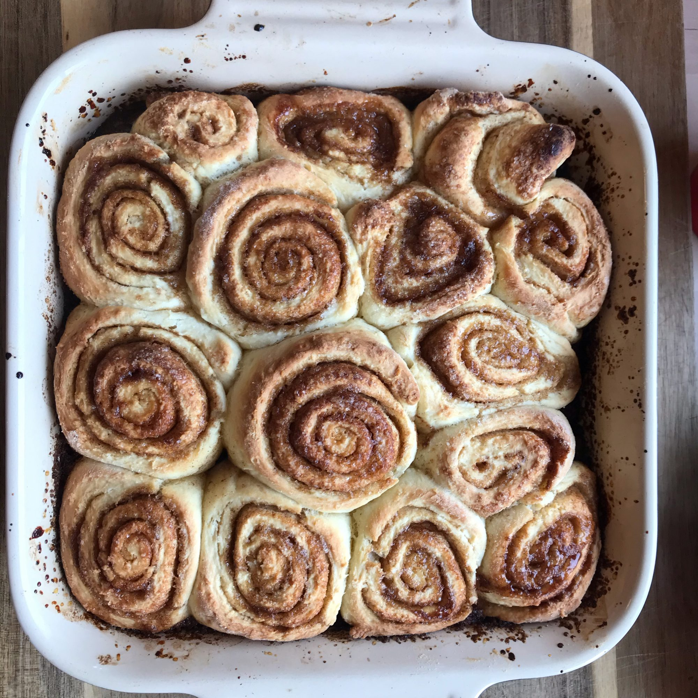

Cinnamon Rolls Recipe

Description:
Quick and easy cinnamon rolls from scratch,
with no yeast, proofing, or kneading necessary!
Ingredients
Dough:
- 2 cups all-purpose flour, or more as needed
- 2 tablespoons white sugar
- 2 teaspoons baking powder
- 1 teaspoon salt
- 3 tablespoons butter, softened (Optional)
- ¾ cup milk
- 1 egg
Filling:
- ½ cup white sugar
- ½ cup brown sugar
- 1 tablespoon ground cinnamon
Steps:
- Preheat oven to 400 degrees F (200 degrees C). Brush a 9-inch square baking dish with 2 tablespoons melted butter.
- Whisk flour, 2 tablespoons white sugar, baking powder, and salt together in a large bowl. Work 3 tablespoons softened butter into flour mixture using your hands. Beat milk and egg together in another bowl; pour into flour-butter mixture and stir with a rubber spatula until a soft dough forms.
- Turn dough out onto a floured work surface and roll dough into a 1/4-inch thick rectangle. Brush surface of dough with 2 tablespoons melted butter.
- Whisk 1/2 cup white sugar, brown sugar, and cinnamon together in a small bowl. Sprinkle 1/2 of the cinnamon sugar mixture in the bottom of the prepared baking dish. Sprinkle remaining cinnamon sugar over butter-brushed dough. Roll dough around filling to form a log; cut log into 18 rolls and place rolls in the prepared baking dish.
- Bake in the preheated oven until rolls are set, 20 to 25 minutes.